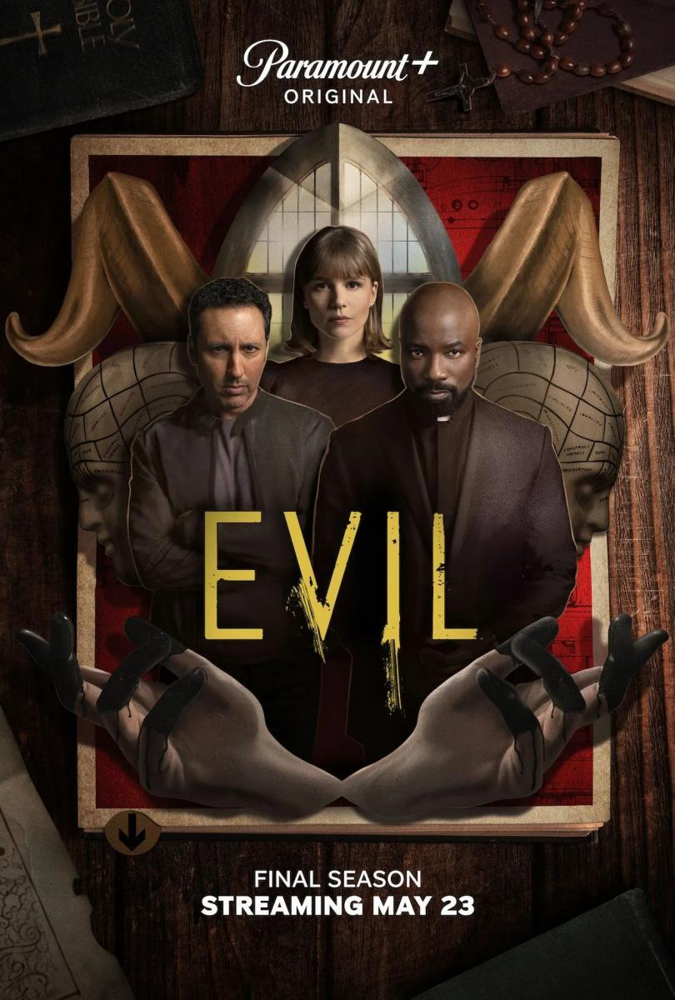
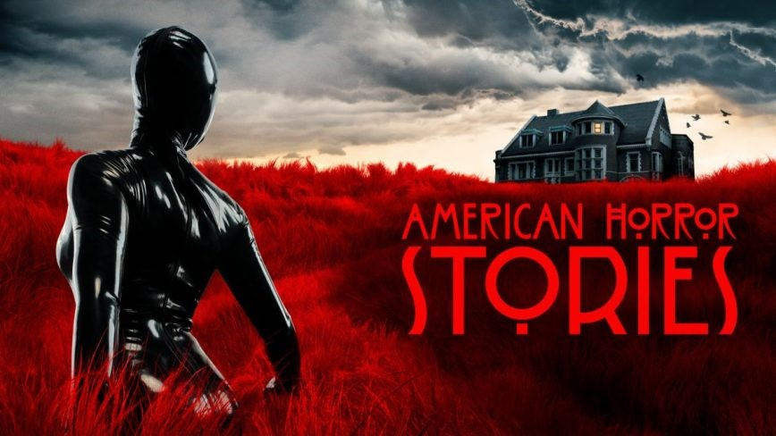
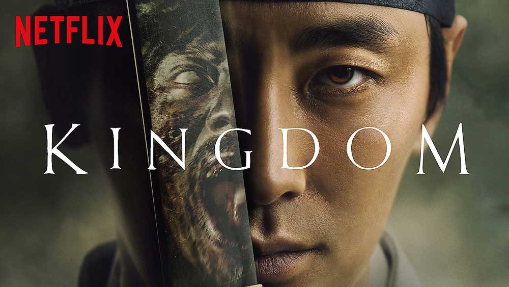
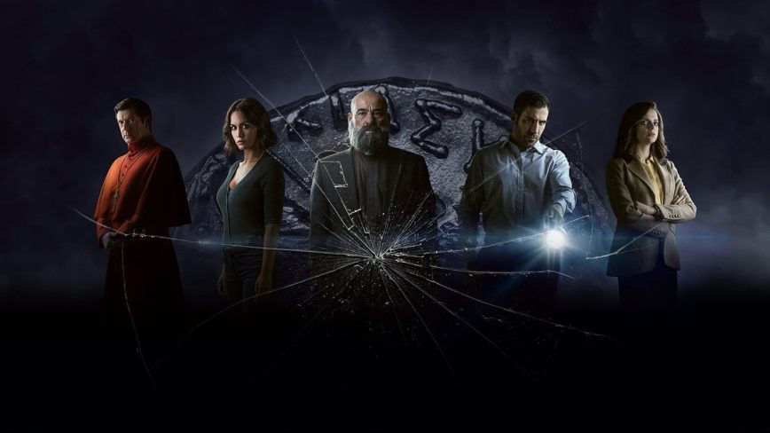

Evil

Evil sigue a «una psicóloga clínica y escéptica que se une a un cura en entrenamiento y a un científico
para investigar supuestos milagros, posesiones demoníacas y otros sucesos extraordinarios para ver si hay
una explicación científica o si algo verdaderamente sobrenatural está sucediendo».
American Horror Stories

American Horror Stories es una serie antológica que explora mitos, leyendas urbanas y tradiciones del terror
clásico, junto con cuestiones contemporáneas relacionadas con las redes sociales y la tecnología.
Kingdom

Ambientada en la dinastía Joseon, Kingdom sigue al príncipe heredero Lee Chang, quien investiga una plaga que
amenaza al reino al descubrir que es una epidemia zombi. Los zombis siguen la mitología original:
"duermen" de día y atacan de noche.
30 Monedas

Una de las 30 monedas de Judas aparece en un pueblo remoto, desatando fuerzas sobrenaturales. El exorcista
y exconvicto Padre Vergara, junto con Paco y Elena, intentan desentrañar los secretos de esta reliquia y
sus oscuros poderes.